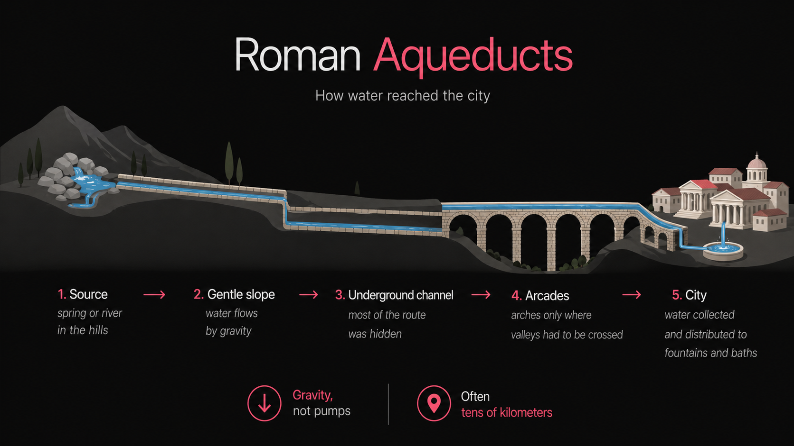

Water moves by itself.
No pumps. Just gravity —
and someone who got the angle right.

Pont du Gard · ~50 AD · 2000 years and counting
Aqueduct of Tarragona, Spain
1st century AD
Locally known as Pont del Diable — Devil's Bridge.
They didn't invent everything from scratch.
They had a manual — written by an engineer who came before them.
His name was
Roman military engineer · 1st century BC
"Ten Books on Architecture."
The only complete engineering treatise
that survived from antiquity.
Maison Carrée · Nîmes · ~16 BC
built using Vitruvian principles
From De Architectura
strength · utility · beauty
A building must stand,
be useful, be beautiful.
Arena de Nîmes · 1st c. AD · venustas in stone
Fast-forward 1500 years
This is not inspiration.
It's a direct diagram from a passage in Vitruvius —
about ideal human proportions.
Leonardo read him fifteen centuries after the original was written.
Even Leonardo built on someone else.
Fast-forward 500 more years
.plan file.A daily public text journal —
what he tried, what he decided, why.
For fourteen years.
Not for fame.
So he himself could see the truth of what was actually done.
2026
Someone asked the CEO of NVIDIA
whether AI would mean fewer engineers.
Here's what he said.
"The purpose of a software engineer
and the task of coding
are related, not the same.
I wanted my software engineers to solve problems.
I didn't care how many lines of code they wrote.
Solving problems, working as a team,
diagnosing problems, evaluating the result,
looking for new problems to solve,
connecting dots.
None of that stuff
is gonna go away." — Jensen Huang · CEO NVIDIA · March 2026
Lex Fridman Podcast #462
So — what does that mean
for what we do here?
Our goal isn't
to teach you to ship widgets.
Our goal is to help you become engineers.
In the sense Vitruvius, Leonardo, Carmack and Huang all meant the word.
2026
"The hard part of programming was never typing the code.
The hard part is knowing exactly what to ask for." — paraphrased from Simon Willison · 2025
LLMs devalued the act of writing code.
They devalued the act of writing text.
But writing —
as a tool of thinking —
is more valuable than ever.
The last question
is the most important one.